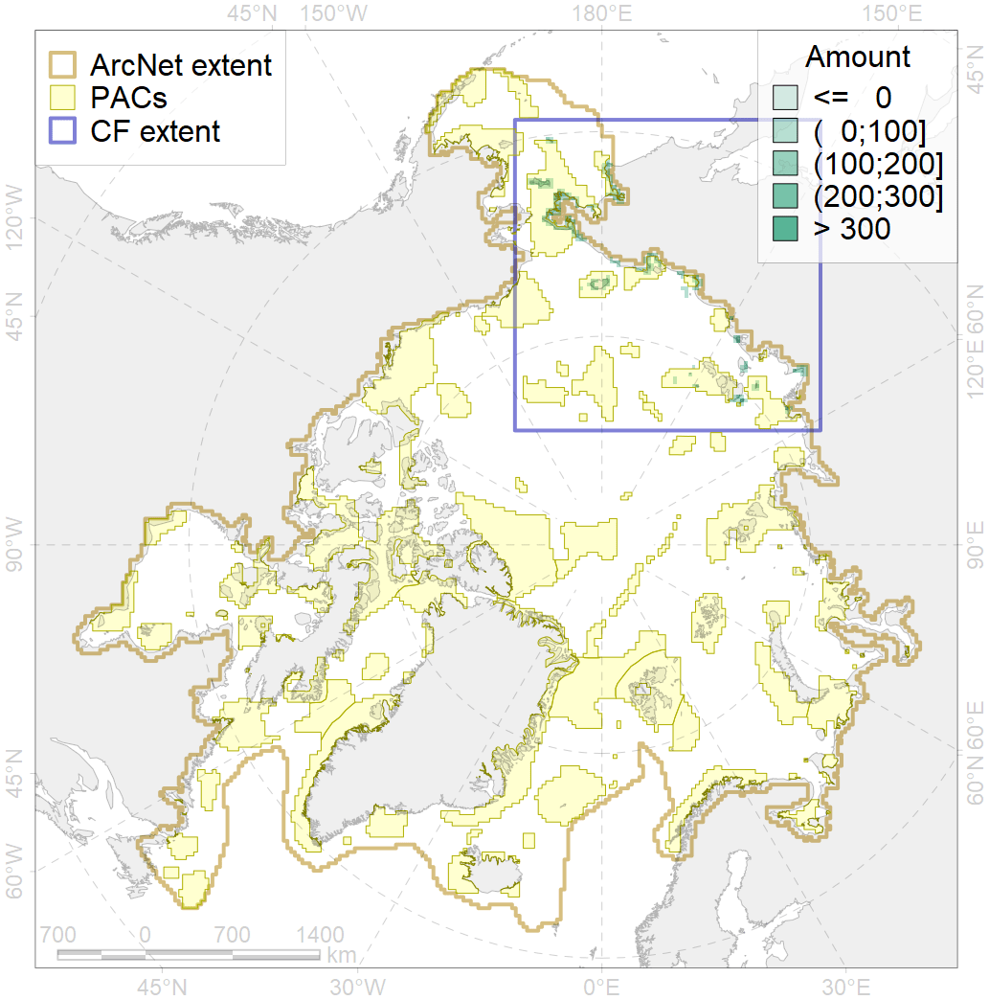
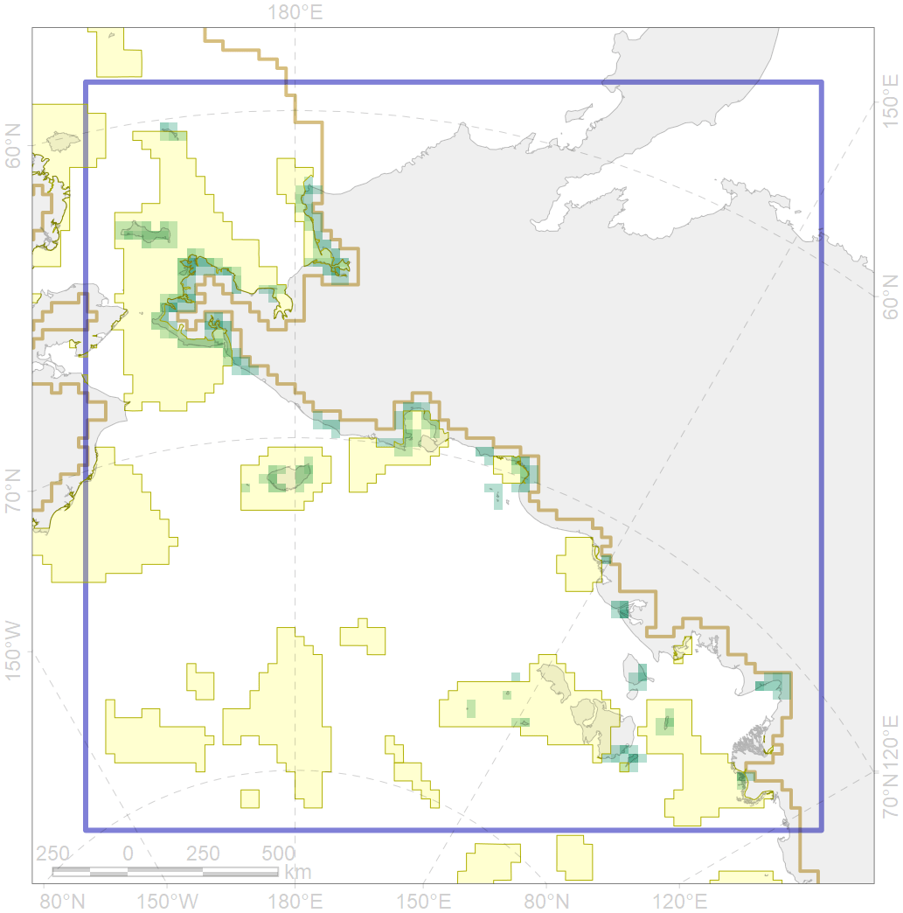

6030

| CF code | 6030 |
| CF name | Glaucous gull (Larus hyperboreus pallidissimus) breeding grounds |
| Time Period | 2013 |
| Source(s) | Petersen et al 2015 |
| Seasonality | April-September |
| Depth Horizon | ≥0 m |
| Methodology | Field Data |
| Use Restrictions | Open source |
| Author Name | Gavrilo, Tertitski |
| Notes | |
| Scenario’s Target | 0.12 |
| Target Achievement | 0.713 (Scenario: 593.9%) |
| PAC | Share of the Total Amount within the PAC | Share of the Target Achievement for the ArcNet | PAC’s Contribution to the Target Achievement |
|---|---|---|---|
| 4 | 5.1%11.3% | 40.5%90.4% | 6.8%15.2% |
| 5 | 28.3%42.4% | 235.3%350.9% | 39.6%59.1% |
| 6 | 0.0%1.3% | 0.0%10.5% | 0.0%1.8% |
| 7 | 5.6% | 47.0% | 7.9% |
| 8 | 5.2%5.3% | 36.7%37.2% | 6.2%6.3% |
| 9 | 2.2%3.8% | 9.0%10.9% | 1.5%1.8% |
| 11 | 1.1% | 9.0% | 1.5% |
| 12 | 2.8%3.0% | 23.6%24.6% | 4.0%4.1% |
| inner | 50.5%73.7% | 401.1%580.4% | 67.5%97.7% |
| outer | 49.5%80.3% | 192.8%428.7% | 32.5%72.2% |
| † supplement values are for area consistence whereas principal values are for Accenter compatible gridded stats |